TX4, TX3, trần vát KT-3.06 và hướng dẫn khắc phục không cần đập tường chịu lực.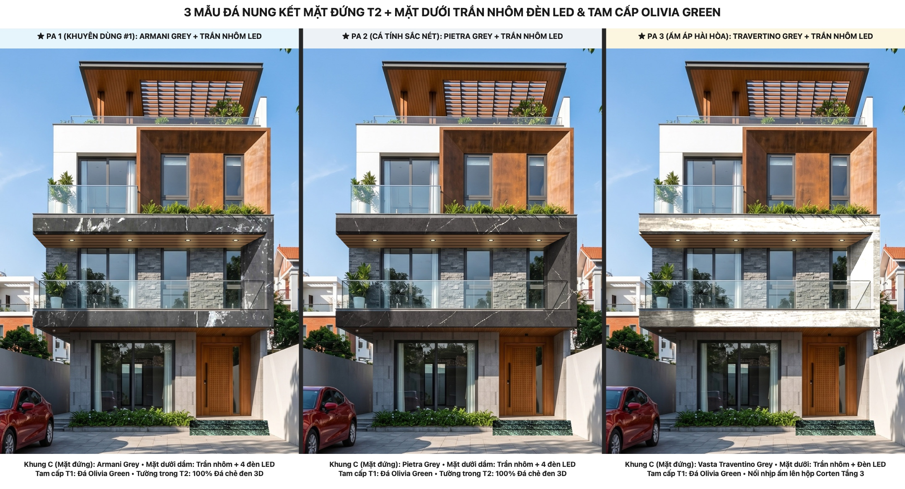
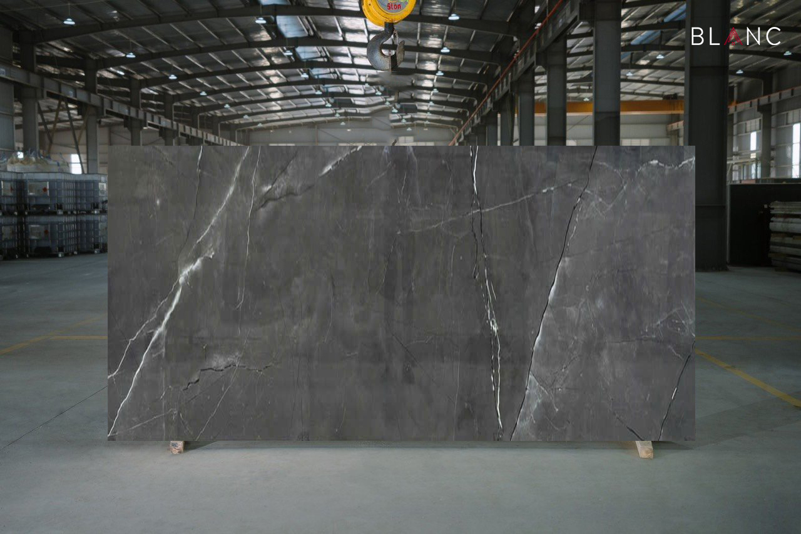
Đá Nung Kết Armani Grey
Nền xám khói trầm lịch lãm cùng các dải vân đá trắng ngà tự nhiên — bắt nhịp trực tiếp với sóng vân trắng xám trên nền xanh đen của bậc tam cấp Olivia Green.
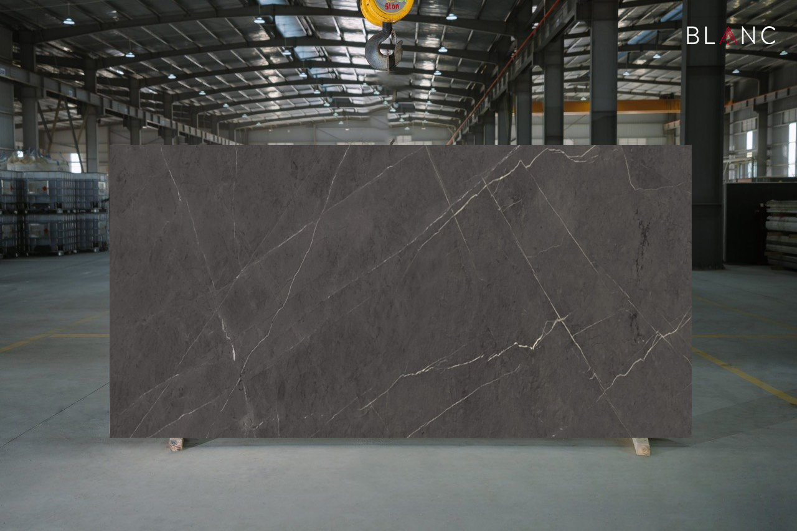
Đá Nung Kết Pietra Grey
Nền đá xám chì đậm (Charcoal) nổi bật những tia chớp trắng mảnh sắc nét, tránh cảm giác phẳng lì đơn điệu và đồng điệu với khung cửa nhôm kính ghi đen.
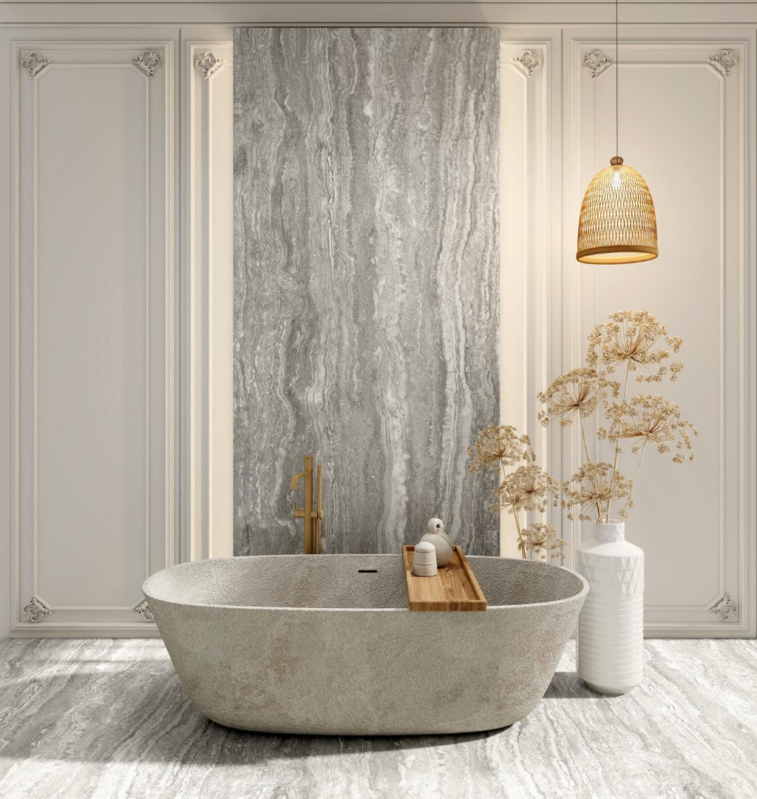
Vasta Stone — Traventino Grey
Đá nung kết vân Travertine xám ấm với thớ vân chảy ngang/dọc tự nhiên, giúp nối nhịp chuyển tiếp mềm mại từ tam cấp Olivia Green lên hộp Corten Tầng 3.
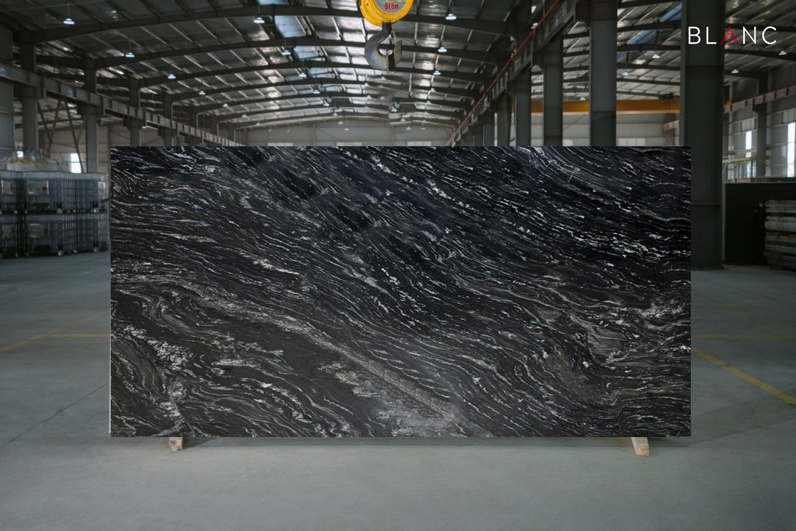
Đá Tam Cấp Olivia Green (Slab Tổng)
Đá Granite Ấn Độ độ cứng 6.5–7 Mohs, hút nước cực thấp (~0.04%). Nên gia công khò lửa / băm mịn chống trơn mặt trên và cổ bậc xám-xanh đồng màu.
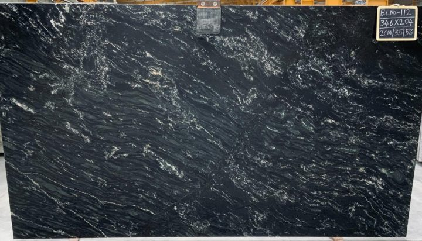
Đá Tự Nhiên Olivia Green (Lô BLNo-112)
Cận cảnh hệ vân xanh rêu đậm xen dải khoáng trắng xám: đi cùng Đá ong xám trơn (T1) + Đá nung kết vân đá (T2) sẽ tránh rối mắt ở Tầng 1.
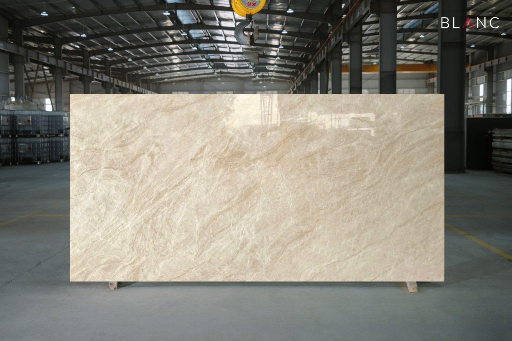
Đá Nung Kết Taj Mahal
Nếu muốn mặt tiền Tầng 2 rạng rỡ và ấm áp hơn hẳn tông xám, dòng vân thạch anh kem ngà Taj Mahal rất ăn nhập với Cửa gỗ CNC (T1) & Corten (T3).
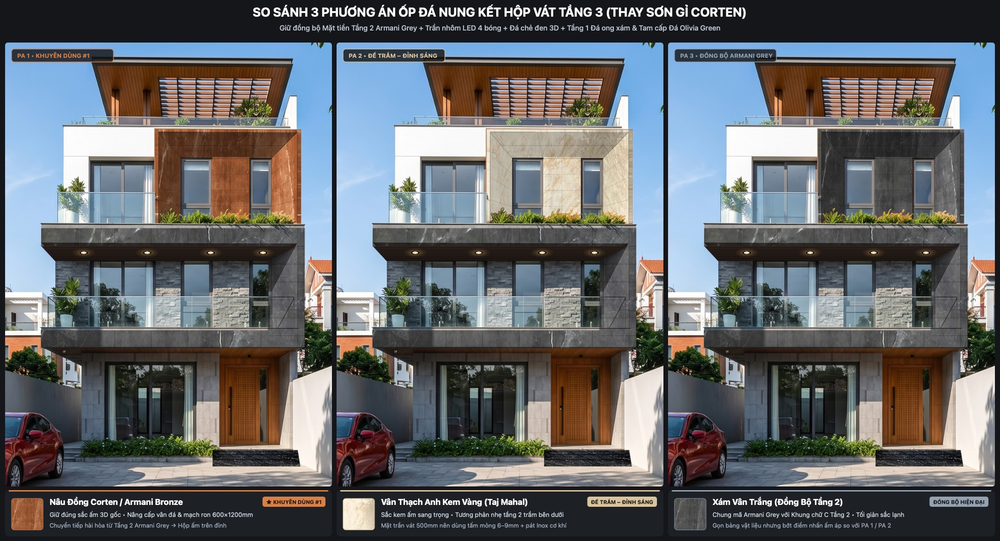
1. So Sánh Trực Tiếp 4 Phương Án Hoàn Thiện Mặt Tiền
Bấm chọn từng phương án bên dưới và kéo thanh trượt Trái / Phải trên ảnh để đối chiếu trực tiếp giữa Thiết kế 3D gốc (Ốp đá) với các phương án chuyển sang Sơn hiệu ứng bê tông hoặc Sơn nước ngoại thất.
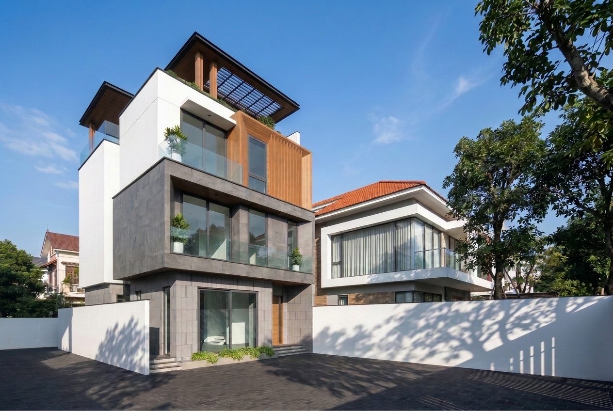
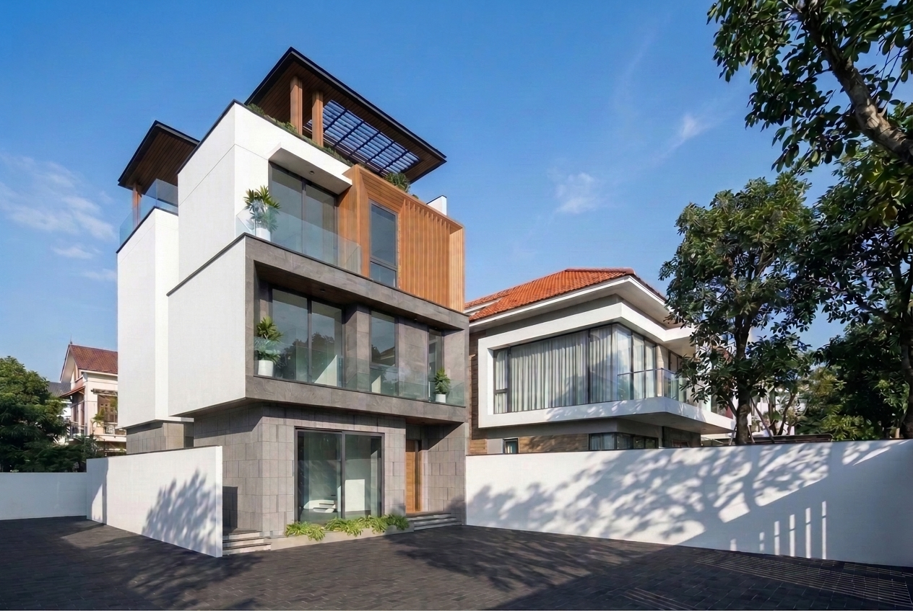
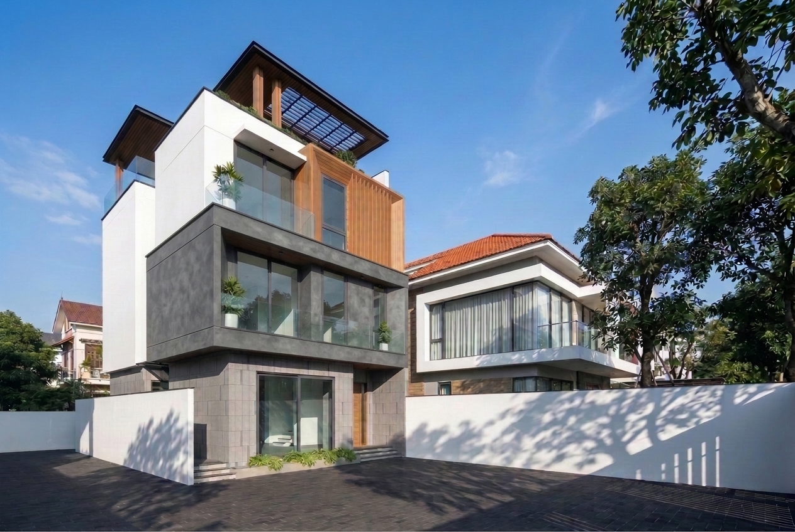
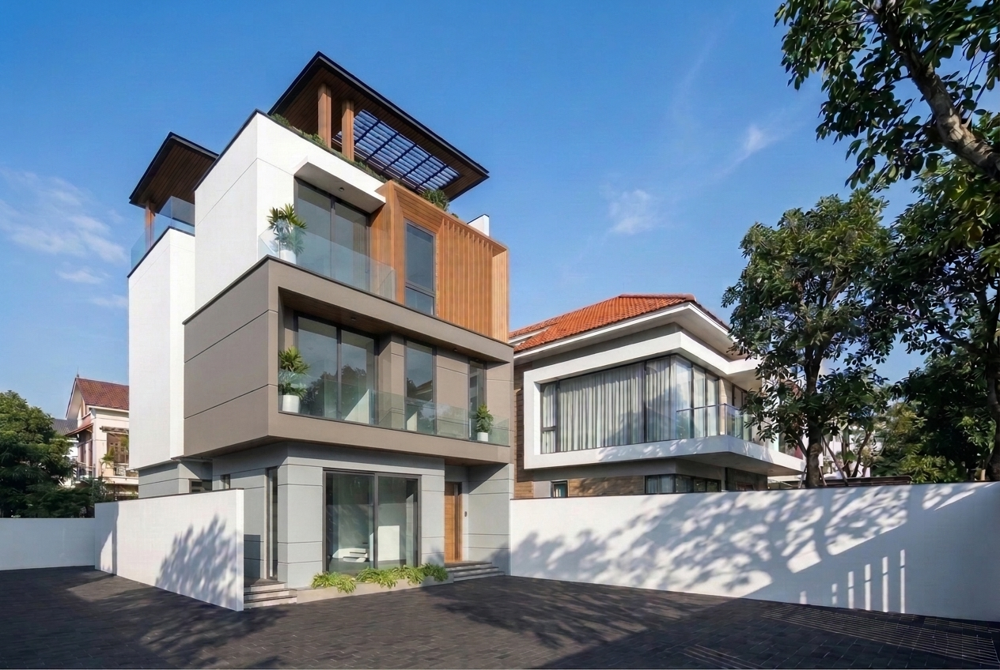
PA 1: Ốp Đá Nung Kết Tầng 2 (Armani / Pietra Grey — Mặt đứng & Khối mặt bên nhô 20cm)
Vì tường Tầng 2 bên đường luồng xây nhô ra 20cm (trong khi tường trắng Tầng 3 vẫn lùi vào 20cm), làm màu Ghi đậm cho cả khối nhô ra 20cm này sẽ tạo thành một chiếc hộp kiến trúc cực kỳ hợp lý!
C2TE-S1 kết hợp pát/móc Inox 304 an toàn tuyệt đối.
2. Bản Đồ Bóc Tách Từng Vùng Mặt Tiền & Phân Định "Thợ Đá vs. Thợ Xây"
Bấm vào từng chấm ký hiệu trên ảnh Mặt đứng 3D (hoặc danh sách bên phải) để xem kích thước chuẩn trong hồ sơ thiết kế, loại vật liệu chỉ định và câu trả lời chính xác hạng mục nào bắt buộc gọi Thợ Đá, hạng mục nào Thợ Xây làm được.
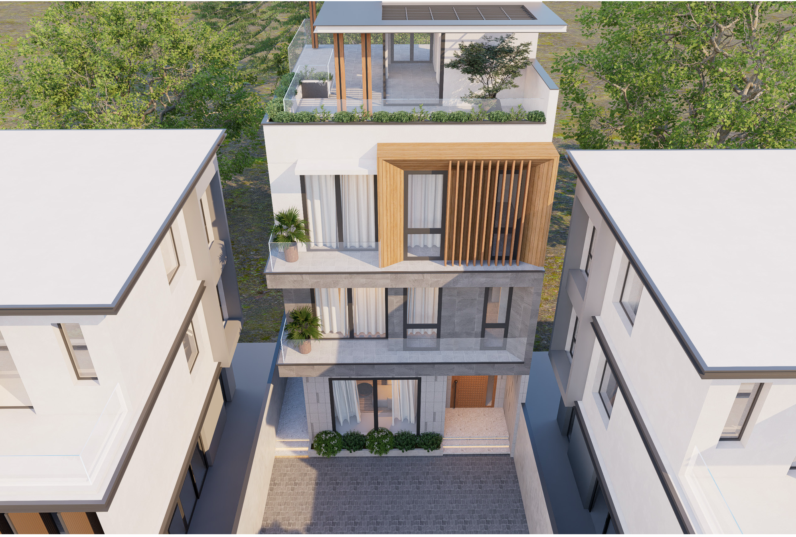
Bản vẽ KT-2.12 & KT-3.05: "Diện tường ốp đá tự nhiên màu ghi đậm" (Dầm dưới cao 550+50mm, dầm trên 565+50mm chia 5 múi 1590mm, mảng đứng trái 900x1985mm).
• Nếu ốp Đá nung kết vân đá (Armani Grey / Pietra Grey / Vasta): Chỉ ốp các mặt đứng Khung chữ C (mặt dưới đóng trần nhôm lắp đèn LED), do Thợ Đá cắt líp mòi 45° cạnh đứng, dùng keo C2TE-S1 kết hợp móc/pát Inox 304.
• Tại sao nên đổi sang Sơn hiệu ứng? Trong Chi tiết 01 (KT-3.05), KTS chỉ vẽ lớp vữa trát 15mm + gờ ngắt nước chứ không vẽ hệ khung sắt treo đá.
Bản vẽ KT-2.12 & KT-2.13: "Diện tường ốp đá ong xám" (Cao 4200mm, rộng 7750mm mặt trước và tường hồi trục 4-1).
• Đây là đá ong xám tự nhiên quy cách nhỏ (100x300mm hoặc 200x400mm, dày 15–20mm), không phải đá tấm khổ lớn.
• Ai ốp? Đội Thợ Xây (thợ nề hoàn thiện) có máy cắt bàn + thước laser hoàn toàn ốp được bằng keo dán gạch đá chuyên dụng. Tuy nhiên ở góc cột chữ L nếu muốn cắt mòi 45° sắc nét thì cần thợ tay nghề cao hoặc giao thợ đá.
Bản vẽ KT-3.05: "Diện tường ốp đá ong xám KT 100x300mm" (Trụ rộng 490mm, cao 2000mm nằm kẹp giữa 2 cửa sổ Tầng 2).
• Các viên đá ong xám 100x300mm xếp đứng tạo sọc dọc như trên phối cảnh 3D. Nếu chọn Phương án 2 (Sơn nước) thì vùng này trát phẳng, kẻ chỉ âm ngang đồng bộ với khung D1.
Bản vẽ KT-3.04 & KT-3.06C: "Ốp đá xám Phú Yên mài hon" (Mặt bậc dày 30mm, cổ bậc dày 20mm, có hèm soi rãnh giấu đèn LED hắt chân bậc).
• Hạng mục này chịu lực đi lại trực tiếp và phải soi mỏ bậc giấu thanh nhôm định hình LED, bắt buộc do Thợ Đá gia công lắp đặt.
Bản vẽ KT-3.06: "Diện tường ốp gỗ nhựa ngoài trời mã chỉ định" + Hệ 11 thanh lam gỗ nhựa đứng tiết diện 50x250mm.
• Đây là điểm nhấn màu nâu gỗ ấm áp cân bằng lại toàn bộ sắc xám - trắng của ngôi nhà. Thi công bằng hệ khung xương thép hộp mạ kẽm bên trong.
• A1: Diện tường sơn màu ghi đậm + soi rãnh 10x10mm (Viền mái Tum & cổ trần).
• A2: Diện tường sơn trắng ngoại thất (Khối tường trái Tầng 3 & Tum).
• A3: Diện tường sơn giả bê tông + soi rãnh 30x10mm (Mảng trán trên cửa Tầng 3 & cổ trần Tầng 1).
4. Đối Chiếu Bản Vẽ Kỹ Thuật (KT-2.12 & KT-3.05) & Bảng So Sánh Tổng Hợp
Vì sao trong bản thiết kế của bạn không có chi tiết móc treo đá mặt tiền? Hãy xem trực tiếp trích xuất bản vẽ Chi tiết 01 (KT-3.05) bên dưới: KTS thiết kế lớp hoàn thiện ngoài cùng dày đúng 15mm và ghi chú là LỚP VỮA TRÁT HT.
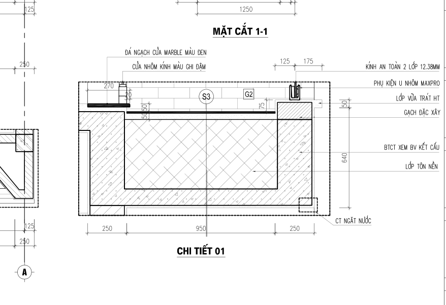
Cấu Tạo Gờ Dầm Tầng 2 (D1)
Bản vẽ cắt ngang dầm Tầng 2 ghi rõ: LỚP VỮA TRÁT HT (15mm) và CT NGẮT NƯỚC. Do đó nếu chuyển sang Sơn hiệu ứng / Sơn nước thì khớp 100% cốt bản vẽ mà không phải sửa kết cấu!
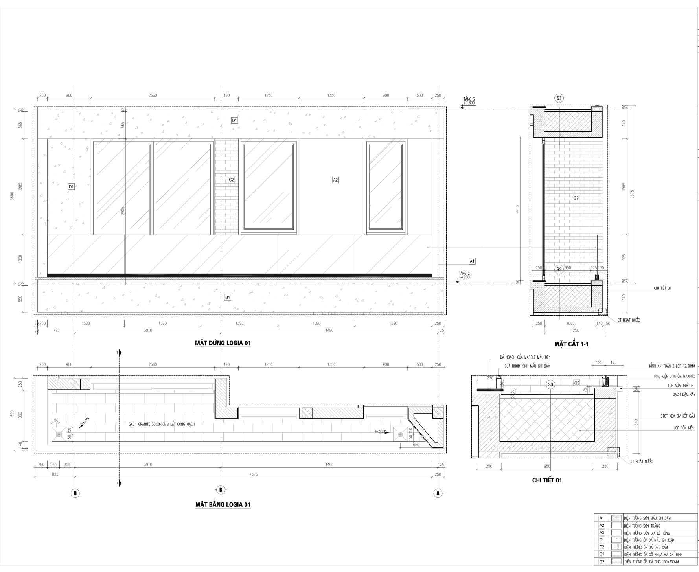
Chia Mô-đun 5 Nhịp 1590mm
Dầm trên của khung chữ C Tầng 2 được chia sẵn thành 5 khoang đều nhau (1590mm/khoang). Đây chính là vị trí chuẩn để bạn đặt nẹp chỉ âm 10x10mm nếu làm phương án Sơn.
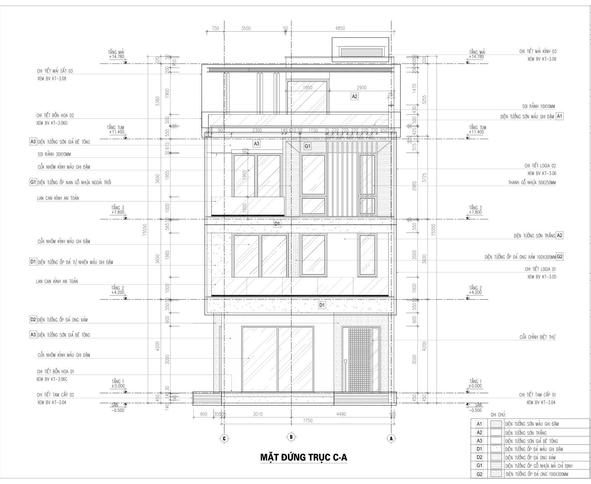
Bảng Ký Hiệu Vật Liệu Tổng Thể
Đối chiếu toàn bộ các mã D1 (đá ghi đậm), D2 (đá ong xám), G1 (gỗ nhựa), G2 (đá ong xám 100x300), A1-A3 (sơn ghi đậm, sơn trắng, sơn giả bê tông).
| Tiêu chí so sánh | PA 1: Phương án "Lai" ★ (Đá ong T1 + Sơn hiệu ứng T2) |
PA 2: Sơn nước Ngoại thất (Phối lại màu + Kẻ chỉ âm) |
PA 3: Ốp Đá Nung Kết T2 (9–10mm) + Đá Ong T1 ★ (Đá Nung Kết Vân Đá T2 + Đá Ong T1) |
PA 4: Sơn Đen Phẳng ❌ (Không đổi màu, không chỉ) |
|---|---|---|---|---|
| Khung chữ C Tầng 2 (D1) | Sơn hiệu ứng bê tông ghi đậm + Chỉ âm 10x10mm |
Sơn nước Ghi ấm trung tính (Satin/Matt) + Chỉ âm 10x10mm |
Ốp Đá nung kết vân đá (Armani / Pietra Grey) dày 9–10mm mặt đứng + Trần nhôm LED mặt dưới |
Sơn nước màu đen/ghi đậm phẳng lỳ |
| Tường Tầng 1 (D2) & Trụ G2 | Ốp Đá ong xám tự nhiên (Giữ nguyên 3D) | Sơn nước màu Xám sáng + Chỉ âm (hoặc giữ Đá ong T1) | Ốp Đá ong xám T1 (20m² PA2) + Đá chẻ đen 3D tường trong T2 (11,2m²) | Sơn nước tối màu phẳng lỳ |
| Đội thợ thi công chính | Thợ xây (ốp T1 & trát chỉ âm T2) + Thợ sơn hiệu ứng | Thợ xây (trát đặt nẹp chỉ âm) + Thợ sơn nước | Thợ xây (ốp Đá ong T1 & Đá chẻ 3D T2) + Thợ đá (ốp Đá nung kết Khung C T2 & Tam cấp Olivia Green) |
Thợ xây + Thợ sơn nước |
| Độ khớp với bản vẽ KT-3.05 | Khớp 100% cốt vữa trát 15mm | Khớp 100% cốt vữa trát 15mm | Khớp cốt trát 15mm (Đá 9–10mm + keo C2TE-S1 + pát Inox 304) |
Khớp cốt trát nhưng sai thẩm mỹ |
| Độ giống phối cảnh 3D | 95% (Giữ nguyên tông màu & vân đá) | 85% (Sáng hơn 1–2 tông, hiện đại, thanh thoát) | 100% | 40% (Nhìn nặng nề, lộ vết lượn sóng tường) |
| Chi phí dự kiến (T1 + T2 hoàn chỉnh) | ~33,6 triệu đ (Đá ong T1 & Chẻ 3D T2 ~16,6tr + Sơn hiệu ứng T2 ~17tr) |
~12 – 15 triệu đ (Toàn bộ 74.5m² sơn nước + nẹp chỉ âm) |
~46,6 triệu đ (Chỉ ốp mặt trước) • Khung C T2 Đá nung kết 9–10mm (15,5m²): ~24,5tr + Trần nhôm 4 LED: ~5,5tr • Đá ong xám mặt tiền T1 (20m²) + Đá chẻ đen 3D T2 (11,2m²): ~16,6tr *(Nếu ốp cả mặt bên T2 nhô 20cm: tổng ~60,6tr)* |
~10 – 12 triệu đ (Nhanh xuống cấp, tốn chi phí sơn lại sau 1–2 năm) |
6. Phối Mặt Tiền Theo Concept 29.05.29 Trên Đúng Hình Khối Thực Tế Đã Xây (Góc Chính Diện & Góc Xiên)
Vì thực tế Tầng 3 đã xây 2 ô cửa sổ đứng ở nửa bên phải (giống y hệt Tầng 2), nên phương án Sơn hiệu ứng gỉ sét (Corten) kẻ chỉ âm chia tấm + Bệ đá ngắt nước của bản Concept 29.05.29 trở nên ăn khớp 100% với cửa sổ đã xây (khoe trọn 2 ô cửa sổ mà không bị hệ lam che khuất). Kéo thanh trượt bên dưới để so sánh cả Góc Chính Diện và Góc Phối Cảnh Xiên:
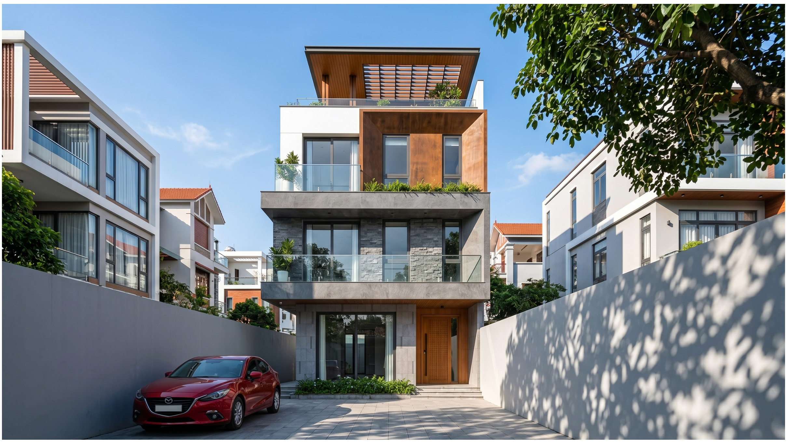
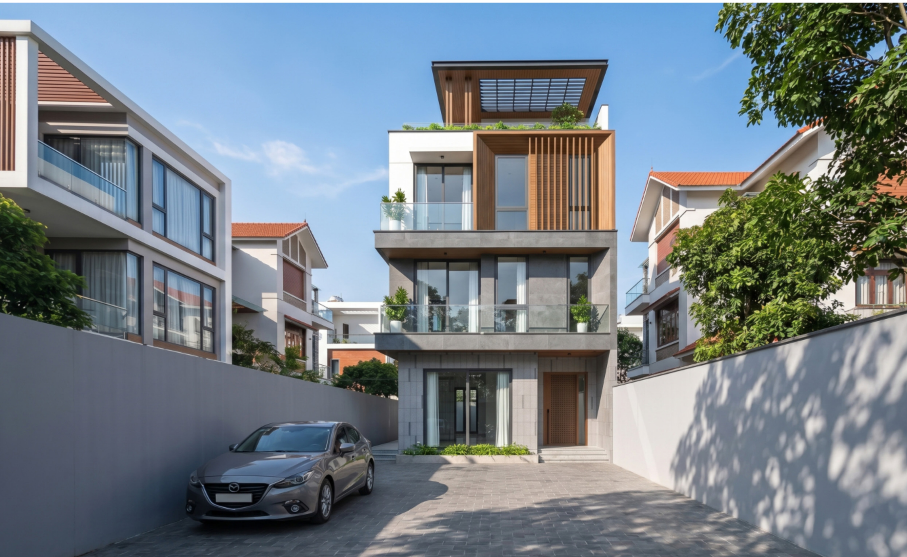
1. Chính Diện: Sơn Gỉ Sét Corten T3 (Đủ 2 Cửa Sổ)
Vì Tầng 3 đã mở 2 ô cửa sổ đứng giống hệt Tầng 2, dùng Sơn hiệu ứng gỉ sét (Corten) kẻ chỉ âm chia tấm + bệ đá ngắt nước giúp khoe trọn 2 ô cửa sổ thẳng hàng từ Tầng 2 lên Tầng 3 cực kỳ cân đối (và bỏ được bồn cây dễ thấm).
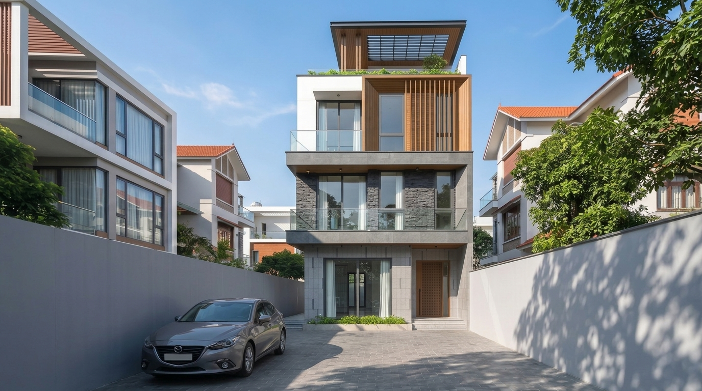
2. Chính Diện: Nếu Làm Lam Gỗ Đè Qua Cửa Phải
Nếu làm hệ lam gỗ nhựa G1 như bản Layout 3D.pdf thì các thanh lam sẽ phải chạy đè qua mặt ngoài của ô cửa sổ thứ 2 bên phải (gây cản sáng và khó lau kính mặt ngoài hơn so với phương án Sơn gỉ sét ở Ảnh 1).
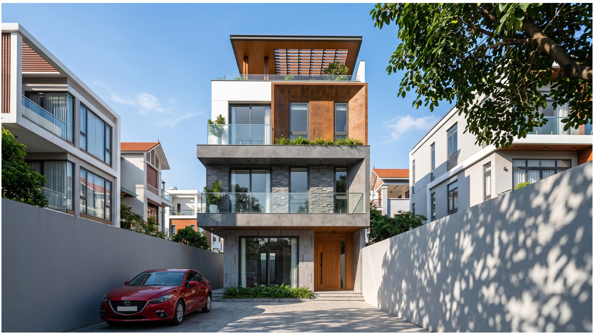
3. Chính Diện Gốc Concept 29.05.29
Bản gốc Trang 5 trong CONCEP 3D.pdf. Có thể thấy phần thô mặt tiền bạn đã xây (cửa Tầng 3 giống hệt Tầng 2) chính là theo đúng bố cục cửa của bản Concept 29.05.29 này!
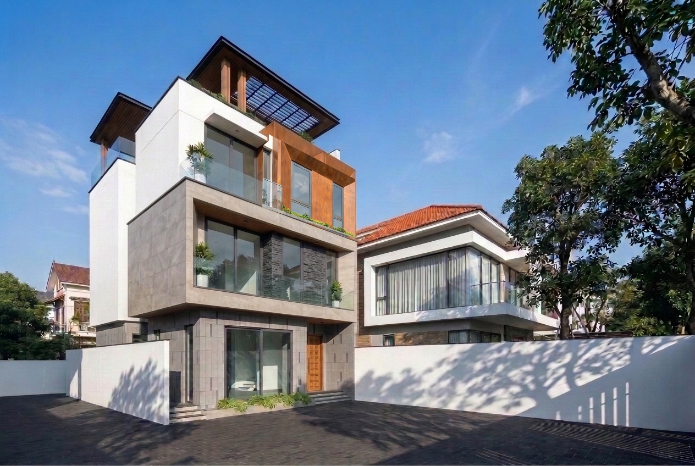
1. Góc Xiên Chuẩn Thực Tế (Sơn Gỉ Sét T3)
• Tầng 3: Mở 2 ô cửa sổ đứng giống Tầng 2 + Sơn hiệu ứng gỉ sét (Corten) kẻ chỉ âm & bệ đá ngắt nước.
• Tầng 2: Khung chữ C & mặt bên đặc nhô 20cm ốp Đá xám xi măng sáng + Trụ trong ban công ốp Đá chẻ đen 3D + Trần gỗ ấm.
• Tầng 1: Đá ong xám kẻ chỉ dọc + Cửa gỗ ô vuông CNC.
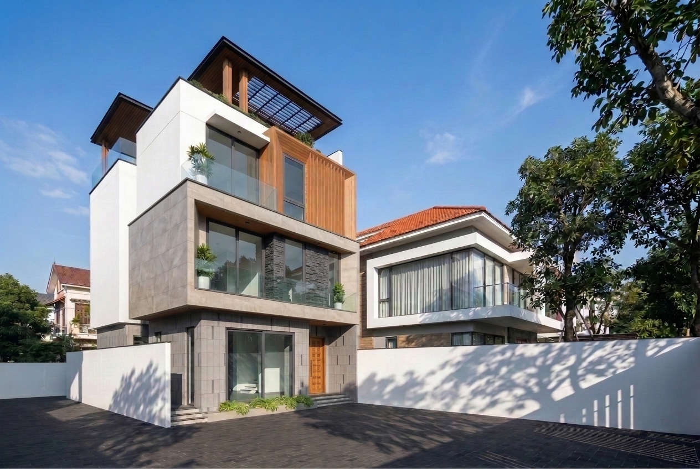
2. Góc Xiên Nếu Dùng Lam Gỗ Nhựa T3
Phương án giữ hệ lam gỗ nhựa đứng G1 ở Tầng 3. Vì thực tế bạn đã xây 2 ô cửa sổ ở Tầng 3 giống Tầng 2, nên làm theo Ảnh 1 (Sơn gỉ sét Corten khoe cả 2 cửa sổ) sẽ hợp lý và tiết kiệm hơn.
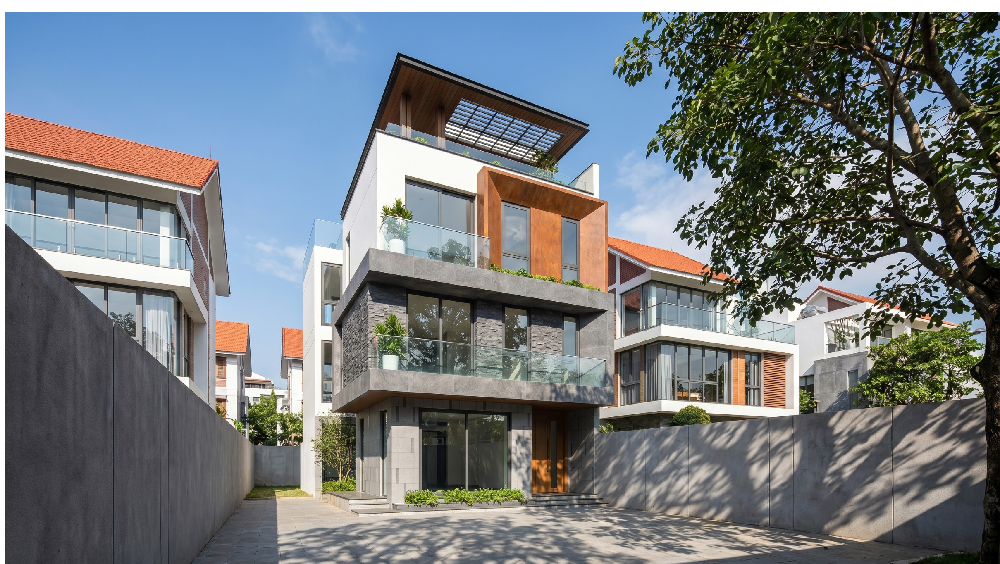
3. Phối Cảnh Gốc Concept 29.05.29
Bản gốc trong file CONCEP 3D.pdf (khi chưa bịt cửa sổ bên hông và tường Tầng 2 bên hông còn vẽ lùi vào tạo hốc đá chẻ). Ở Ảnh 1, phần mặt bên Tầng 2 đã được làm phẳng theo đúng tường xây thực tế.
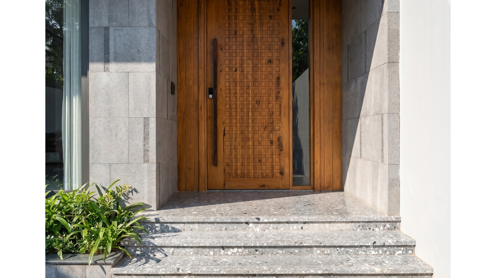
4. Cận Cảnh Sảnh T1 & Cửa Gỗ CNC
Chi tiết cực đẹp từ Trang 7 bản Concept mà bạn nên đưa cho thợ áp dụng: Ốp đá ong xám kết hợp các thanh chỉ đá sẫm màu chạy dọc + Cửa gỗ chính chạm ô vuông CNC và trần sảnh ốp gỗ ấm.
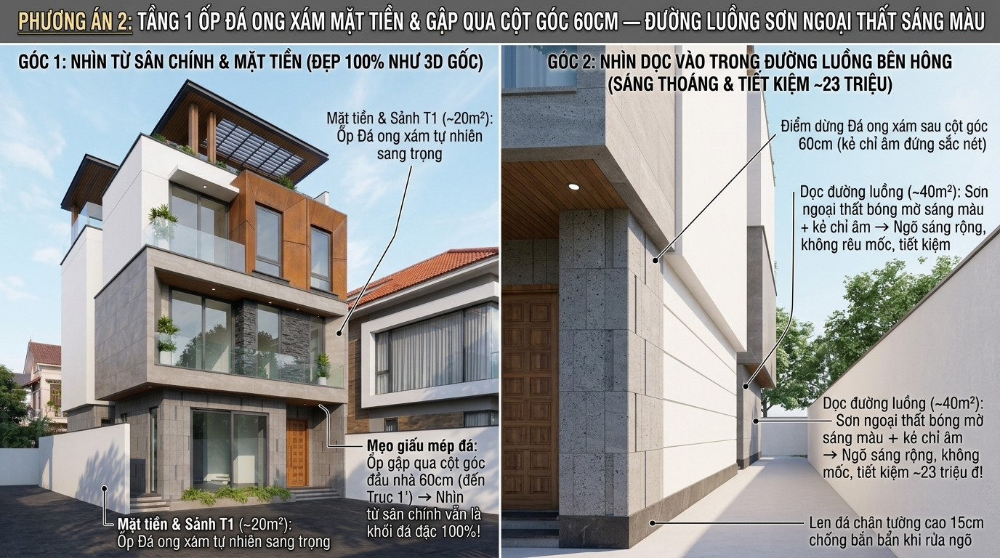
7. Mô Hình 3D Cắt Lớp Chuẩn Chiều Vát (KT-3.06), Lý Do Sống Còn Phải Có Gờ Ngắt Nước Ở Mũi Ngoài & Phân Tích Có Nên Đẩy Bồn Cây Ra Mép Ngoài Không?
Đúng như bạn phát hiện rất tinh tế từ bản vẽ kiến trúc KT-3.06 (Mặt cắt 2-2 & Chi tiết 01):
(1) Chiều vát chuẩn của hộp Sơn gỉ sét Tầng 3 là bắt đầu thấp ở ngay mép trên khung cửa sổ rồi vát chéo vươn LÊN ra phía ngoài 400mm (tạo thành hình cái nêm thuôn nhọn ra mũi ngoài chỉ dày 160mm). Chính vì mặt trần vát này dốc ngược từ ngoài vào thẳng đỉnh cửa sổ, nên môi ngắt nước 15mm + nẹp GMN-04 ở mũi ngoài cùng là chi tiết sống còn (nếu không ngắt đứt giọt ngay tại mũi ngoài, nước mưa sẽ chảy tuột theo dốc vát lao thẳng vào đỉnh khung cửa sổ!).
(2) Về việc có nên chỉnh bồn cây ra tận mép ngoài hộp vát hay không: Xem ngay mô hình 3D cắt lớp và bản vẽ so sánh 2 phương án dưới đây:
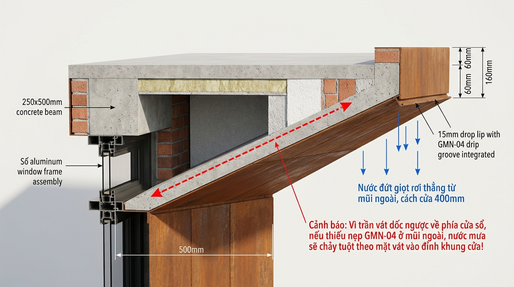
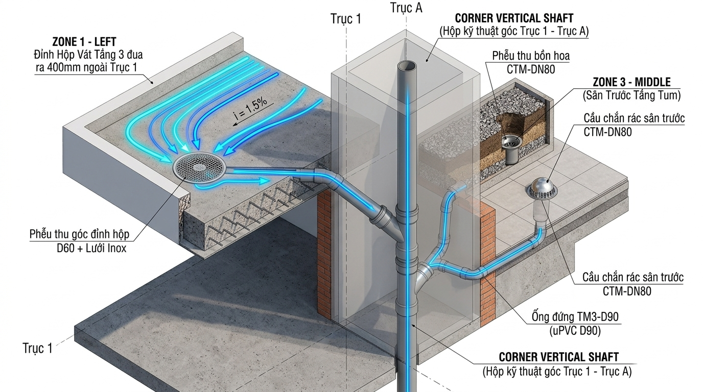
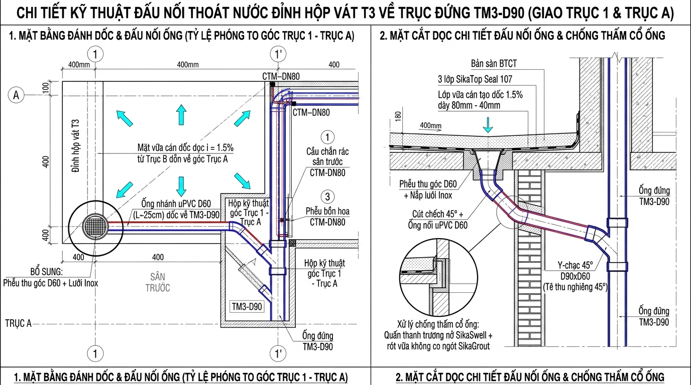
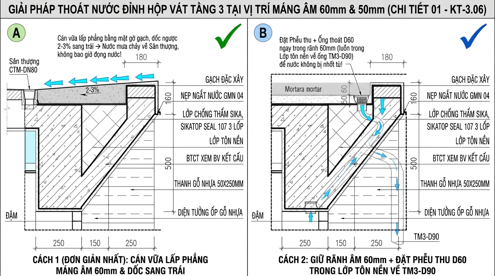
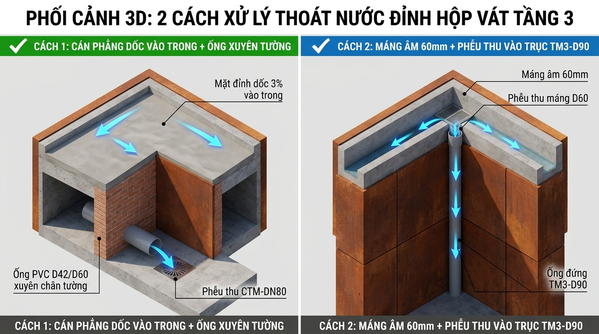
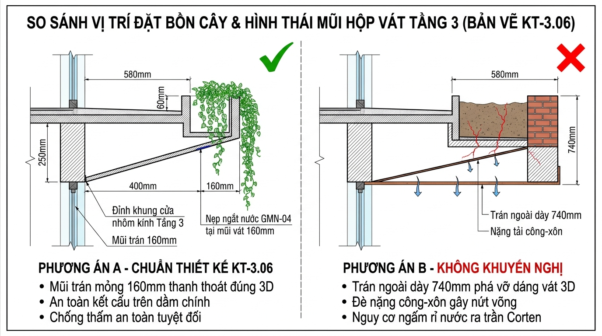

Vì Sao Chiều Vát Này Bắt Buộc Phải Có Gờ Ngắt Nước Ở Mũi Ngoài?
• Nhìn vào Chi tiết 01 (KT-3.06): Từ mép trên cửa sổ nhôm kính (dưới đáy dầm 250×500mm), bản BTCT vát chéo vươn lên trên và đua ra ngoài 400mm (150 + 250mm) để gặp mũi trán ngoài chỉ cao 160mm (gồm 100mm bê tông + 60mm gạch đặc xây chặn mép).
• Nguyên lý trọng lực cực kỳ quan trọng: Vì mặt trần vát này dốc từ mũi ngoài (cao) tụt chéo xuống đỉnh cửa sổ (thấp hơn 500mm), nên nếu ở đáy mũi ngoài 160mm không có Môi hạ thấp 15mm + Nẹp ngắt nước GMN-04, nước mưa từ mũi ngoài sẽ chảy tuột một mạch theo mặt dốc vát 500mm lao thẳng vào khe trên khung cửa sổ Tầng 3!
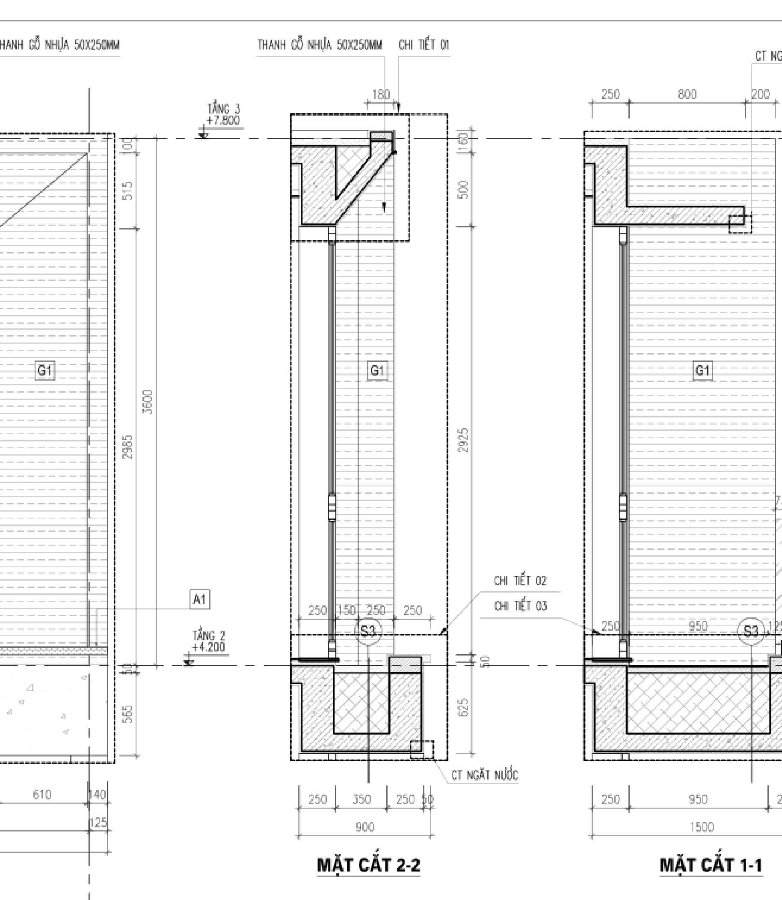
❌ KHÔNG NÊN Xây Bồn Cây Cao 580mm Ra Sát Mép Mũi Vát!
Có 3 lý do cốt tử khiến bản vẽ KT-3.06 tuyệt đối không đặt bồn cây ra mép ngoài hộp vát:
1️⃣ Làm hỏng hoàn toàn tỷ lệ vát nhọn 3D: Vẻ đẹp đắt giá nhất của chiếc hộp Corten là cạnh vát thuôn nhọn ra mép ngoài mỏng đúng 160mm (như lưỡi dao sắc nét). Nếu xây tường bồn cây cao 580mm ngay tại mép ngoài, mặt trán đứng sẽ bị dày cộp lên thành 160 + 580 = 740mm (trông nặng nề như bức tường đặc, mất sạch hiệu ứng vát mảnh!).
2️⃣ Quá tải công-xôn & Nguy cơ thấm khe vát: Phần mũi vát đua ra 400mm có lõi rỗng/tôn nền hình tam giác bên trong. Nếu chất hàng trăm kg đất ướt + rễ cây đè lên đầu mũi công-xôn 400mm này, rất dễ nứt mạch ngừng bê tông và ngấm nước rỉ sét thẳng xuống mặt trần vát.
3️⃣ Giải pháp thông minh nhất nếu muốn có cây rủ: Giữ nguyên mũi vát phẳng mỏng 160mm (chỉ xây gờ gạch cao 60mm chặn nước quét 3 lớp SikaTop Seal 107 như Chi tiết 01), và đặt bồn cây (hoặc khay chậu composite) LÙI VÀO PHÍA TRONG (nằm đè lên đúng dầm chính 250mm) để cây Cúc tần Ấn Độ rủ mềm qua mép vát!
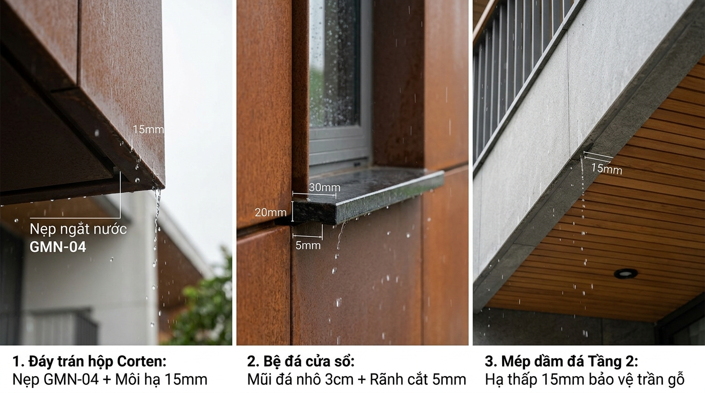
1. Mũi Ngoài Hộp Sơn Gỉ Sét Tầng 3 (KT-3.06)
• Trên mặt phẳng đỉnh hộp vát (đua 400mm): Xây gờ gạch đặc cao 60mm rộng 180mm ở mũi ngoài (tạo gờ chắn nước âm 60mm), quét 3 lớp chống thấm SikaTop Seal 107 và đánh dốc thu nước ngược về phía trong.
• Ngay dưới đáy mũi trán ngoài (160mm): Trước khi vát chéo tụt xuống cửa sổ, bắt buộc tạo môi hạ thấp 15mm + gắn nẹp ngắt nước GMN-04 ngay sát mũi ngoài để nước đứt giọt rơi thẳng xuống đất (cách cửa sổ 400mm), tuyệt đối không cho nước chảy tuột theo dốc vát vào đỉnh cửa sổ!
2. Bệ Đá 2 Ô Cửa Sổ Đứng Tầng 3 & Tầng 2
• Nguyên nhân gây bẩn: Nước mưa rửa bụi trên mặt kính 2 ô cửa sổ sẽ dồn về 2 góc dưới bệ cửa rồi chảy bết xuống tường Sơn gỉ sét bên dưới tạo thành 2 vệt đen ("râu cửa sổ").
• Cách xử lý: Đặt tấm đá tự nhiên màu đen/xám dày 20mm làm bệ cửa nhô ra khỏi mặt tường 25–30mm (hai đầu chờm rộng hơn cửa 20mm). Ở mặt dưới mũi đá nhô ra, cắt 1 đường rãnh lưỡi cưa sâu 5mm (rãnh ngắt nước) để nước bẩn rơi thẳng ra không trung!
3. Trán Dầm Đá Khung Chữ C & Trần Ban Công
• Trên đỉnh dầm ngang Tầng 2 (Sàn ban công T3): Đánh dốc thu nước vào phễu ban công Tầng 3 (và bỏ bồn cây sát mép ngoài dầm để không bị rỉ nước đất bùn qua trán đá).
• Ở mép dưới trán dầm đá Tầng 2: Cho tấm đá mặt đứng (hoặc gờ vữa ngoài) hạ thấp hơn mặt trần gỗ/nhôm bên trong 12–15mm tạo thành "môi đá ngắt nước" kết hợp rãnh ngắt nước 5mm. Nước mưa đến mép dưới trán đá sẽ đứt giọt ngay!